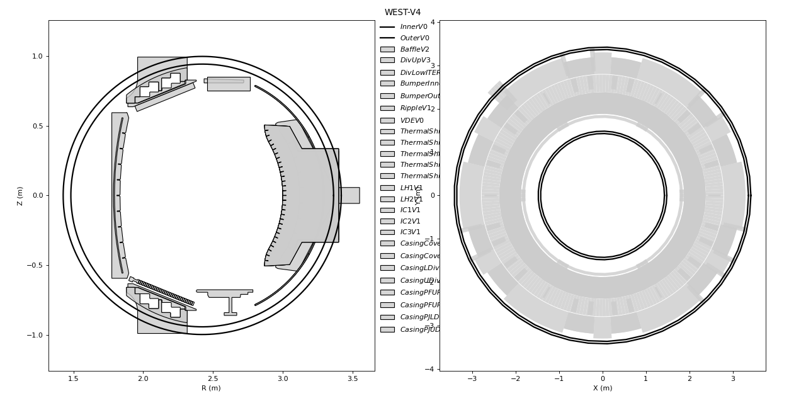
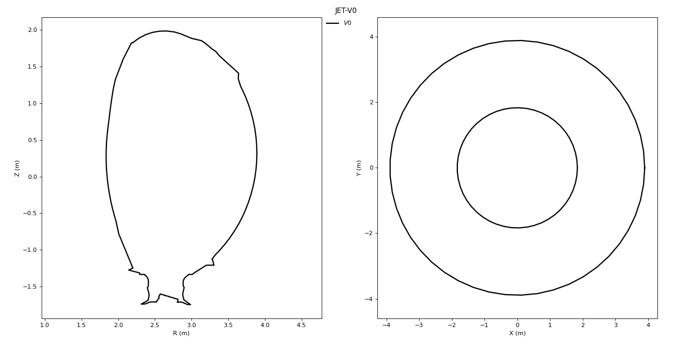
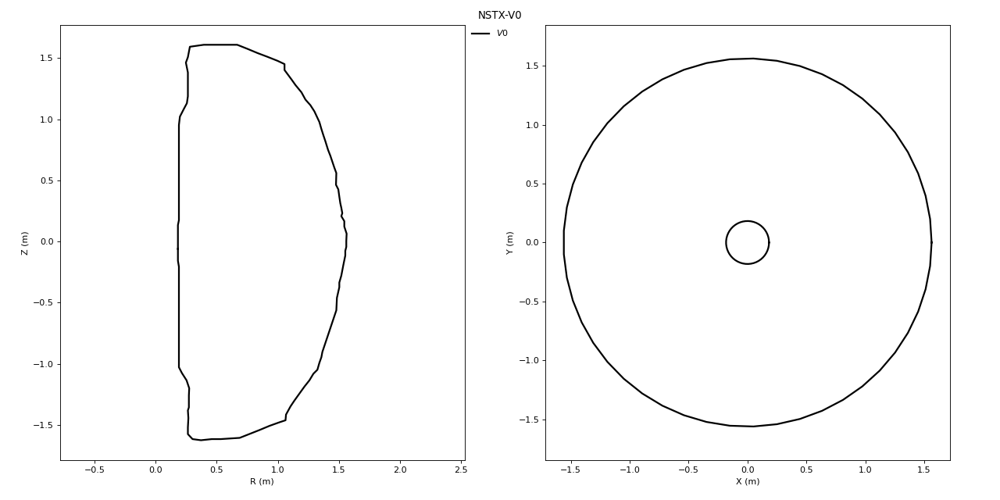
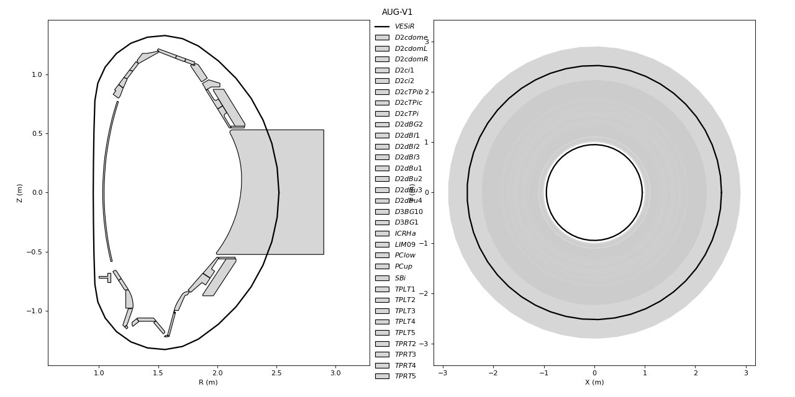

Note
Click here to download the full example code
A gallery of Fusion Machines¶
This tutorial functions as a gallery of fusion machines that can easily be loaded with tofu.
We start by importing tofu.
import tofu as tf
tofu provides a geometry helper function that allows creating a configuration with a single call.
Some configurations are pre-defined, for example ITER’s configuration.
By printing the config object created, a text representation of its components is printed. This allows inspecting the component names, number of sections, color or visibility.
config = tf.geom.utils.create_config("ITER") # create ITER configuration
print(config)
Out:
tot. Struct tot. occur tot. points
----------- ---------- -----------
25 757 471
class Name SaveName nP noccur mobile color visible
----- ----- ------------------------------------------------------ --- ------ ------ -------------------- -------
Ves V1 TFG_Ves_ExpITER_V1_sh00000_Vers1.4.2b4-92-gf832ab7e 102 0 False (0.0, 0.0, 0.0, 1.0) True
PFC BLK01 TFG_PFC_ExpITER_BLK01_sh00000_Vers1.4.2b4-92-gf832ab7e 6 18 False (0.8, 0.8, 0.8, 0.8) True
PFC BLK02 TFG_PFC_ExpITER_BLK02_sh00000_Vers1.4.2b4-92-gf832ab7e 6 18 False (0.8, 0.8, 0.8, 0.8) True
PFC BLK03 TFG_PFC_ExpITER_BLK03_sh00000_Vers1.4.2b4-92-gf832ab7e 6 18 False (0.8, 0.8, 0.8, 0.8) True
PFC BLK04 TFG_PFC_ExpITER_BLK04_sh00000_Vers1.4.2b4-92-gf832ab7e 6 18 False (0.8, 0.8, 0.8, 0.8) True
PFC BLK05 TFG_PFC_ExpITER_BLK05_sh00000_Vers1.4.2b4-92-gf832ab7e 6 18 False (0.8, 0.8, 0.8, 0.8) True
PFC BLK06 TFG_PFC_ExpITER_BLK06_sh00000_Vers1.4.2b4-92-gf832ab7e 6 18 False (0.8, 0.8, 0.8, 0.8) True
PFC BLK07 TFG_PFC_ExpITER_BLK07_sh00000_Vers1.4.2b4-92-gf832ab7e 8 18 False (0.8, 0.8, 0.8, 0.8) True
PFC BLK08 TFG_PFC_ExpITER_BLK08_sh00000_Vers1.4.2b4-92-gf832ab7e 10 18 False (0.8, 0.8, 0.8, 0.8) True
PFC BLK09 TFG_PFC_ExpITER_BLK09_sh00000_Vers1.4.2b4-92-gf832ab7e 9 18 False (0.8, 0.8, 0.8, 0.8) True
PFC BLK10 TFG_PFC_ExpITER_BLK10_sh00000_Vers1.4.2b4-92-gf832ab7e 5 18 False (0.8, 0.8, 0.8, 0.8) True
PFC BLK11 TFG_PFC_ExpITER_BLK11_sh00000_Vers1.4.2b4-92-gf832ab7e 4 36 False (0.8, 0.8, 0.8, 0.8) True
PFC BLK12 TFG_PFC_ExpITER_BLK12_sh00000_Vers1.4.2b4-92-gf832ab7e 4 36 False (0.8, 0.8, 0.8, 0.8) True
PFC BLK13 TFG_PFC_ExpITER_BLK13_sh00000_Vers1.4.2b4-92-gf832ab7e 4 36 False (0.8, 0.8, 0.8, 0.8) True
PFC BLK14 TFG_PFC_ExpITER_BLK14_sh00000_Vers1.4.2b4-92-gf832ab7e 4 18 False (0.8, 0.8, 0.8, 0.8) True
PFC BLK15 TFG_PFC_ExpITER_BLK15_sh00000_Vers1.4.2b4-92-gf832ab7e 4 18 False (0.8, 0.8, 0.8, 0.8) True
PFC BLK16 TFG_PFC_ExpITER_BLK16_sh00000_Vers1.4.2b4-92-gf832ab7e 4 36 False (0.8, 0.8, 0.8, 0.8) True
PFC BLK17 TFG_PFC_ExpITER_BLK17_sh00000_Vers1.4.2b4-92-gf832ab7e 4 36 False (0.8, 0.8, 0.8, 0.8) True
PFC BLK18 TFG_PFC_ExpITER_BLK18_sh00000_Vers1.4.2b4-92-gf832ab7e 4 36 False (0.8, 0.8, 0.8, 0.8) True
PFC Div1 TFG_PFC_ExpITER_Div1_sh00000_Vers1.4.2b4-92-gf832ab7e 76 54 False (0.8, 0.8, 0.8, 0.8) True
PFC Div2 TFG_PFC_ExpITER_Div2_sh00000_Vers1.4.2b4-92-gf832ab7e 11 54 False (0.8, 0.8, 0.8, 0.8) True
PFC Div3 TFG_PFC_ExpITER_Div3_sh00000_Vers1.4.2b4-92-gf832ab7e 60 54 False (0.8, 0.8, 0.8, 0.8) True
PFC Div4 TFG_PFC_ExpITER_Div4_sh00000_Vers1.4.2b4-92-gf832ab7e 10 54 False (0.8, 0.8, 0.8, 0.8) True
PFC Div5 TFG_PFC_ExpITER_Div5_sh00000_Vers1.4.2b4-92-gf832ab7e 60 54 False (0.8, 0.8, 0.8, 0.8) True
PFC Div6 TFG_PFC_ExpITER_Div6_sh00000_Vers1.4.2b4-92-gf832ab7e 52 54 False (0.8, 0.8, 0.8, 0.8) True
To get a list of all available built-in configs, one has to know some details about tofu. Configurations can be accessed by names (ITER, WEST, JET, etc).
print(tf.geom.utils.get_available_config())
Out:
A config is the geometry of a tokamak
You can define your own, see online tutorial at:
https://tofuproject.github.io/tofu/auto_examples/tutorials/tuto_plot_create_geometry.html
tofu also also provides some pre-defined config ready to load
They are available via their name or via shortcuts
unique names shortcuts
------------ -------------------------
- AUG-V1 ['AUG-V1', 'AUG']
- ITER-V1 ['ITER-V1', 'A2']
- ITER-V2 ['ITER-V2', 'B4', 'ITER']
- JET-V0 ['JET-V0', 'JET']
- NSTX-V0 ['NSTX-V0', 'NSTX']
- WEST-Sep ['WEST-Sep', 'A3']
- WEST-V1 ['WEST-V1', 'A1']
- WEST-V2 ['WEST-V2', 'B1']
- WEST-V3 ['WEST-V3', 'B2']
- WEST-V4 ['WEST-V4', 'B3', 'WEST']
=> to get a pre-defined config, call for example:
config = tf.geom.utils.create_config('ITER')
None
With that being said, let’s create a gallery of the “top 3” fusion machines provided by tofu to accelerate diagnostic development.
for fusion_machine in ['ITER', 'WEST', 'JET', 'NSTX', 'AUG']:
config = tf.geom.utils.create_config(fusion_machine)
config.plot()
- 
- 
- 
- 
Total running time of the script: ( 0 minutes 4.415 seconds)